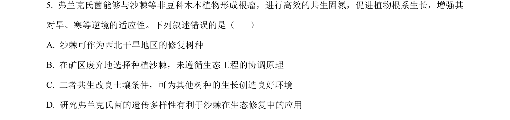
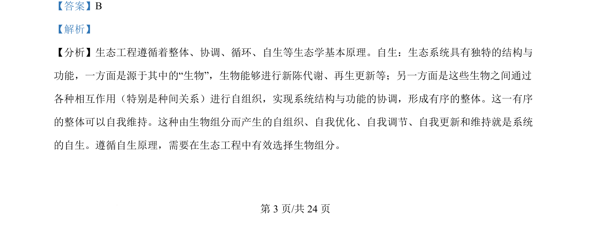
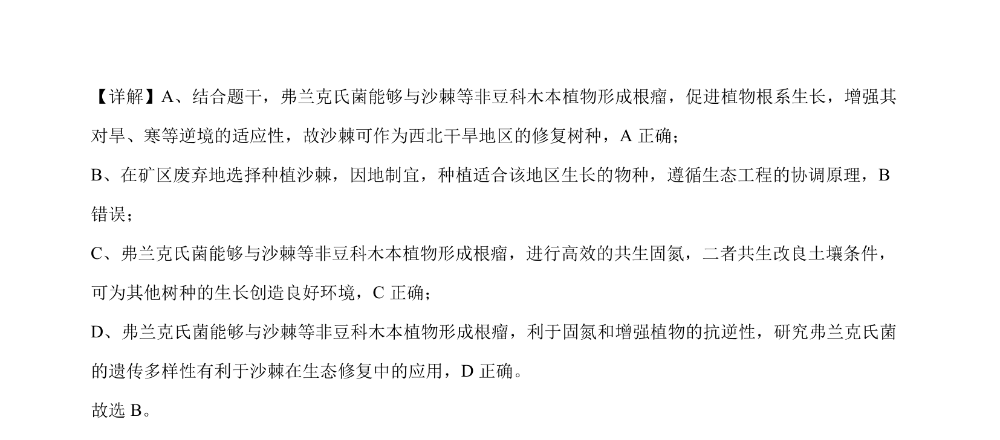

考点：共生固氮 生态工程协调原理 生态修复 种间关系

沙棘与弗兰克氏菌共生固氮及生态修复应用，考查生态工程协调原理。


📄 原 PDF 第 3 页：
素材/真题/吉林/2008-2024·（吉林）生物高考真题/2024年高考生物试卷（辽宁）（解析卷）.pdf
【答案】B 【解析】 【分析】生态工程遵循着整体、协调、循环、自生等生态学基本原理。自生：生态系统具有独特的结构与 功能，一方面是源于其中的“生物”，生物能够进行新陈代谢、再生更新等；另一方面是这些生物之间通过 各种相互作用（特别是种间关系）进行自组织，实现系统结构与功能的协调，形成有序的整体。这一有序 的整体可以自我维持。这种由生物组分而产生的自组织、自我优化、自我调节、自我更新和维持就是系统 的自生。遵循自生原理，需要在生态工程中有效选择生物组分。 的